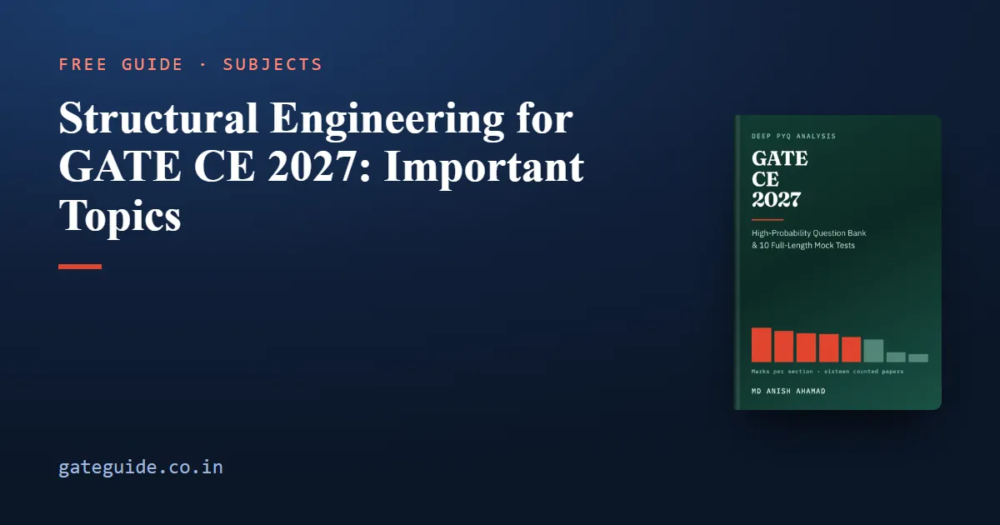

Structural Engineering for GATE CE 2027: Important Topics

Structural Engineering is the largest technical section of the GATE Civil Engineering paper. Counted question by question across all sixteen papers from 2019 to 2026, Set 1 and Set 2 in each year, it averages 15.1 marks a paper and ranges from 12 to 19, a spread of 7 marks. This guide covers its five topics, which are rising and falling, and what the 2027 syllabus removed and added: this is the section the revision changed most.
In this guide
Key takeaways
- Structural Analysis and energy methods carries 86 of the section's 241 counted marks, 36 per cent, and drew between 9 and 14 marks in every one of the eight years.
- All five topics, including the small Engineering Mechanics topic, drew marks in all eight years. None of them is safe to drop.
- Concrete Structures shows the largest rise in the section and Structural Analysis the largest fall, though Structural Analysis remains the largest topic by a wide margin.
- IIT Madras sets GATE 2027 and also set both 2019 papers. Across those two papers Concrete Structures drew 1 mark and Steel Structures 10.
- Prestressed concrete (14 counted marks) and free vibration (8) are gone from the 2027 syllabus, along with the flexibility method and plate girders. Six phrases are new.
Where the 241 marks sit
The evidence is 150 questions and 241 marks, each checked against its official answer key.
| Topic | Marks | Questions | Share | Trend (late − early) | Last seen |
|---|---|---|---|---|---|
| Structural Analysis and energy methods | 86 | 51 | 36% | −10 | 2026 |
| Solid Mechanics | 59 | 40 | 24% | +9 | 2026 |
| Steel Structures | 41 | 24 | 17% | −5 | 2026 |
| Concrete Structures | 37 | 25 | 15% | +13 | 2026 |
| Engineering Mechanics | 18 | 10 | 7% | 0 | 2026 |
Trend is marks in 2023–2026 minus marks in 2019–2022. Each half is eight papers, so the two compare directly. A trend of one or two marks is noise, because a single unusual paper moves it.
Prestressed concrete and free vibration questions are outside these 241 marks, because the count is made against the 2027 syllabus, which no longer names them. Civil is also examined as two different papers a year, which is why every citation below names the set. How the two sets are placed on one scale is covered in how GATE normalises scores across sessions.
Topic by topic
Structural Analysis and energy methods: 86 marks
This is the spine of the section. At 36 per cent of the largest technical section it is worth about 5.5 of the paper's 100 marks a year, more than the whole of Geomatics. Counted examples include 2019 Set 1, Q.7 and Q.39, and 2019 Set 2, Q.20 and Q.36.
The recurring vehicles are few: static and kinematic indeterminacy counted off a frame; deflection of a determinate beam, frame or truss by a work or energy method; an indeterminate structure solved by consistent deformations, slope-deflection or moment distribution; influence lines; and determinate arches and cables.
Indeterminacy is the cheapest of them. For a plane frame, , less one for each internal hinge joining two members. For the indeterminate methods, hold the member stiffnesses (far end fixed) and (far end hinged) and the fixed-end moment for a uniform load on a fixed–fixed span.
The −10 trend comes mostly from two high early years, 14 marks in 2020 and 13 in 2022 (both sets combined). Since 2023 the topic has run at 9 or 10 marks a year. That is its floor, not a collapse.
Solid Mechanics: 59 marks, and rising
Solid Mechanics ran from 5 marks (2020 and 2022) to 12 (2023), and its +9 trend is the second-largest rise in the section. Counted examples include 2019 Set 1, Q.6 and 2019 Set 2, Q.5. Every item on its syllabus list has been examined, but Mohr's circle and the Euler buckling load are the most reliable recurrences. For buckling, with the least second moment of area governing; taking the larger is the standard slip. Shear centre is examined qualitatively more often than numerically: 2019 Set 2, Q.8 asked only for the shape of a shear stress distribution. The 2027 text now reads "Transformation of stress (Mohr's circle)", naming the tool for the first time.
Concrete and Steel: read the two rows together
Concrete Structures (37 marks) and Steel Structures (41) look like two mid-sized topics. Year by year they behave like one topic whose marks swing between two halves:
| Year (both sets) | Concrete | Steel |
|---|---|---|
| 2019 | 1 | 10 |
| 2020 | 5 | 5 |
| 2021 | 2 | 4 |
| 2022 | 4 | 4 |
| 2023 | 6 | 5 |
| 2024 | 7 | 1 |
| 2025 | 8 | 6 |
| 2026 | 4 | 6 |
Concrete here excludes prestressed concrete. The combined figure (11, 10, 6, 8, 11, 8, 14, 10) is far steadier than either row. 2024 reversed 2019 almost exactly.
The 2019 finding. The single 2019 Concrete mark is one Set 1 question on nominal cover (2019 Set 1, Q.9); 2019 Set 2 had no Concrete Structures question at all. Steel's ten marks came from six questions, 2019 Set 1, Q.8, Q.33 and Q.36 and 2019 Set 2, Q.6, Q.30 and Q.38, covering a limit state bending member, plastic analysis of a T-section, an eccentric fillet-weld group, effective length, non-dimensional slenderness and web bearing. The section total did not move (16 and 14 marks), so a section-level table shows nothing unusual.
Two papers, set by a different panel under a different syllabus, are a signal and not a law. They support one narrow point: do not make Steel the topic you plan to survive. The book's prediction, and it is labelled as one, is about 10 marks between the two topics with the split left open. There is more on the institute in what IIT Madras setting GATE 2027 means.
What to hold. Concrete's four recurring calculations are the limiting depth of the neutral axis, the limiting moment of resistance, development length and stirrup spacing, all to IS 456:2000: for Fe415; compression acting from the compression face; for M20, raised 60 per cent for deformed bars. Every steel design question in the record works to IS 800:2007 limit state design: for yielding, for rupture, for shop welds and for site welds. These are expected knowledge, not given data. And belongs to IS 456, never to IS 800.
Engineering Mechanics: 18 marks
The smallest topic, 1 to 4 marks a year, yet examined in all eight years. Counted examples include 2021 Set 1, Q.39 and 2024 Set 2, Q.16. With free vibration gone it is down to four items: forces and free-body diagrams, internal forces, friction and centre of mass. Zero-force members in a truss are its most frequent one-mark vehicle. An afternoon covers it.
What the 2027 syllabus removed
The official 2026 and 2027 documents, compared word by word, show four Structural removals:
| Gone for 2027 | Counted marks, 2019–2026 | Where |
|---|---|---|
| Prestressed concrete beams | 14 | a 2-mark question in 2020 Set 1 and Set 2, 2021 Set 1, 2022 Set 2, 2024 Set 1, 2026 Set 1 and Set 2 |
| Free vibration of an undamped SDOF system | 8 | four papers |
| Flexibility method | none | — |
| Plate girders | none | — |
That is 22 marks of recent history on material the 2027 paper does not name, and any weightage table compiled before the 2027 syllabus counts all of it inside this section. Cut both from your plan.
There is a fair counter-argument on prestress: 2027 still names "design and detailing of beams", and a prestressed beam is a beam. The book rejects it because 2026 listed design of beams and prestressed concrete beams as two separate items, so deleting one is a deletion. It also notes that examiners occasionally reach past the syllabus: thin cylindrical pressure vessels appear in 2022 Set 1 and 2026 Set 1, named by neither syllabus. The risk of dropping prestress is small and specific, roughly one 2-mark question on a topic the organisers deliberately removed. Make that call knowingly.
What the 2027 syllabus added
Six phrases. Five had already been examined, fully or in part, under older wording; only isolated footings never has.
- Principle of virtual work and Castigliano's second theorem. Both were already examined: 2019 Set 1, Q.39 asked for a joint displacement in a determinate frame, and 2022 Set 2, Q.46 was an MSQ on Castigliano's theorems and virtual work. Castigliano gives . Be able to derive the cantilever tip deflection that way, not only recall it.
- Method of consistent deformations. Now named beside slope-deflection and moment distribution; the problems it solves were already examined. Prepare all three.
- Influence lines and moving loads. Locating the train of loads that maximises a bending moment is harder than reading an ordinate; 2022 Set 1, Q.52 asked it for a two-axle truck, and 2019 Set 2, Q.36, set by IIT Madras, the maximum shear at an internal hinge.
- Isolated footings (with "detailing") in Concrete. The only one of the six never examined, so a footing question would have no precedent.
- Plastic analysis of portal frames. 2026 Set 2, Q.49 already asked for a portal frame's combined collapse mechanism by virtual work. Hold the shape factors: rectangle 1.50, solid circle 1.70, diamond 2.00, I-section about 1.12 to 1.15.
How to prepare this section
- Structural Analysis first, and thoroughly. 36 per cent of the section and never below 9 marks a year.
- Prepare Steel to the same standard as Concrete. It costs a few evenings and removes an exposure no section-level table can show.
- Learn the code constants cold, and practise design questions in the MSQ format too. MSQs per paper have run from none in 2019 to 15 in one 2025 paper; the rules are in the marking scheme, which is common to every GATE paper.
- Cut prestressed concrete and free vibration. Recognise them on sight in old papers and move on.
- Read the six new phrases in the syllabus itself, isolated footings above all.
The Structural chapter of the GATE CE 2027 book carries 32 questions written in proportion to this evidence, none on deleted material, each with a worked solution. Check the final syllabus on the official site, and the GATE 2027 exam dates for the schedule.
Frequently asked questions
How many marks does Structural Engineering carry in GATE CE?
Counted question by question across all sixteen GATE Civil papers from 2019 to 2026, Structural Engineering averages 15.1 marks a paper, with individual papers running from 12 to 19 marks. That makes it the largest technical section in the paper. The figure excludes prestressed concrete and free vibration, which the 2027 syllabus no longer names.
Which Structural Engineering topic is most important for GATE CE 2027?
Structural Analysis and energy methods. It took 86 of the section's 241 counted marks, or 36 per cent, and drew between 9 and 14 marks in every one of the eight years once both sets are combined. Indeterminacy counting, deflections by energy methods and the three indeterminate methods are its recurring questions.
Is prestressed concrete in the GATE CE 2027 syllabus?
No. The 2026 Concrete Structures line ended with prestressed concrete beams, and the 2027 line ends with bond and development length and names isolated footings instead. Prestressed concrete drew 14 counted marks across seven of the sixteen papers, so past-paper practice will keep showing it. One counter-argument exists, because 2027 still names design and detailing of beams.
Should I prepare steel or concrete design more for GATE 2027?
Prepare both to the same standard. IIT Madras, which sets GATE 2027, also set both 2019 papers, and across those two papers Concrete Structures drew 1 mark while Steel Structures drew 10. Two papers are a signal rather than a law, but they show that concrete being the heavier half is not guaranteed.
What is new in the GATE CE 2027 Structural Engineering syllabus?
Six phrases are named for the first time: the principle of virtual work, Castigliano's second theorem, the method of consistent deformations, influence lines and moving loads, isolated footings, and plastic analysis of portal frames. Only isolated footings has never been examined. The flexibility method and plate girders were removed alongside prestressed concrete and free vibration. Confirm the final text on the official GATE 2027 website.
Sources
- GATE 2027 official website (IIT Madras)
- GATE 2027 CE syllabus (official PDF)
- GATE official paper archive (IIT Guwahati)
Dates, fees and the syllabus are set by the GATE 2027 organising institute and can change. Always confirm at gate2027.iitm.ac.in.